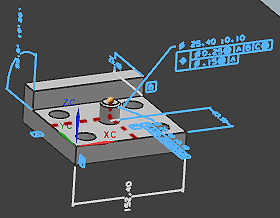
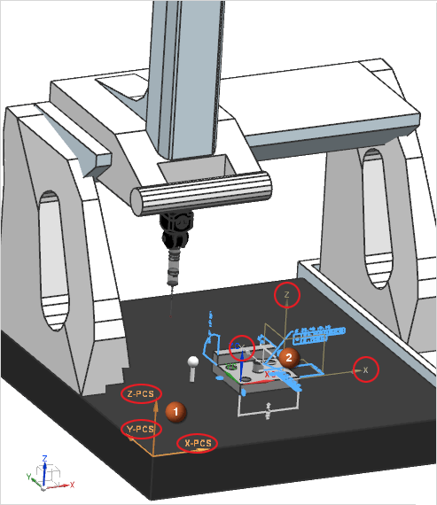
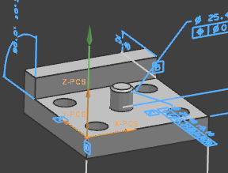
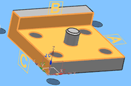

Understanding coordinate systems
Work Coordinate System
When you open a part file and create an inspection setup file container for it, that part file has a rectilinear Work Coordinate System (WCS) associated with it. The WCS is the reference frame from which the part’s perfect nominal location, orientation, alignment, and origin is defined relative to the absolute coordinate system of NX.
The WCS 0,0,0 origin is the point from which all feature measurements were defined. This origin occurs at the point where the mutually perpendicular X, Y, and Z axes intersect.
If the WCS were used to measure the part in the example shown, X, Y and Z values relative to the WCS origin would define the perfect center point at the top of the cylinder.

|
Tip |
Choose Format→WCS→Display to show the WCS if it is not visible. |
Machine Coordinate System
When you implement an alignment strategy on an actual machine, you cannot take reliable feature measurements from the WCS because form, roundness, flatness, and other surface defects cause variation in calculations and orientation. In CMM Inspection Programming, you begin the process of separating the nominal and actual worlds by defining a Machine Coordinate System (MCS). An MCS consists of three mutually orthogonal axes of motion. The MCS is often located on a corner of the CMM table and is set to be mutually parallel with the movement of the CMM.
To define the MCS, use the Set PCS to MCS option on the Type list in the Alignment dialog box.
|
 |
|||
|
|
MCS |
|
Parallel CMM motion |
Teach point location
Most Direct Computer Control (DCC) systems require that when the machine starts up, the probe must first move to a teach point. A teach point location is a repeatable reference on the part.
In CMM Inspection Programming, you will typically make a measurable point on the part the teach point. Use the Translate PCS Origin option on the Type list in the Alignment dialog box to specify the teach point. Translation is the process of moving the 0,0,0 origin of the MCS along its X, Y, and Z axes without reorienting the relationship of those axes or changing their vector length.
In this example, the CMM operator is prompted to manually measure a feature point on a part that will serve as the teach point. The point’s measured X, Y, and Z values, relative to the MCS, link the part to the CMM’s MCS.

|
Tip |
Use the Rotate PCS option on the Type list in the Alignment dialog box to rotate the PCS around an axis. |
Part Coordinate System
After you establish a teach point, you must define a measurable Part Coordinate System (PCS) to establish the orientation, alignment, and origin of the real part. Since the three axes of the PCS are generally related to the part’s datum definitions, the PCS locates the actual measurements and orientations of inspection features on the part back to its 0,0,0 origin.
ISO 5459:1981 defines a datum as a “theoretically exact geometric reference (such as axes, planes, straight lines, etc.) to which toleranced features are related.” Based on what ISO calls “adequately precise” measured part features, datums constrain all six degrees of freedom of a part’s movement. In the real world, a datum surface deviates from its perfect value. For this reason, before the CMM can begin the inspection of the toleranced features, it must use the PCS to adequately realign the part based on the measurements of these imperfect datum surfaces.
PCS alignment strategies
PCS alignment strategies in CMM programming are based on concerns such as the shape of the part, tolerance inspection requirements, the amount of variation in datum surfaces, and how surfaces need to be probed. The process becomes more complex if no perpendicular relationships exist between features measured to establish datums, such as features on a part that consist of many curved surfaces. To simplify the alignment process, you can constrain a part using target points on a machine fixture.
The most common form of alignment is a 3–2–1 strategy involving the use of three orthogonal datum planes, sometimes called a datdef by DMIS programmers. In CMM Inspection Programming, use the Define PCS from Datums option on the Type list in the Alignment dialog box to apply this strategy.

You can use datums, rotations, and translations together in any combination to establish additional PCSs. You can also save and recall a PCS at a future location in the program.